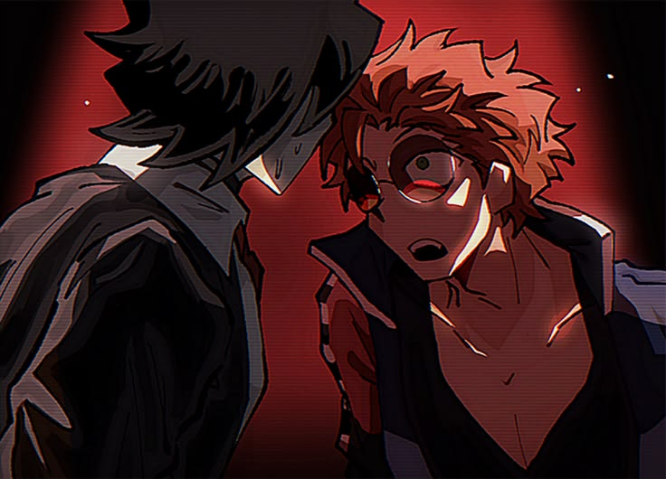
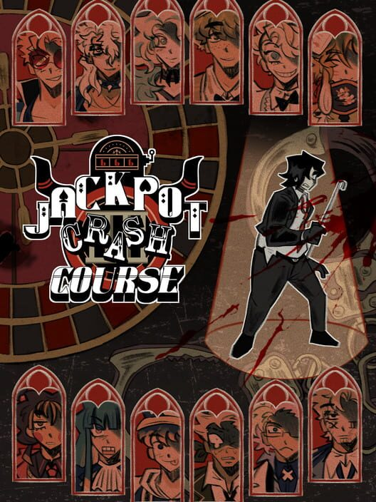

Description
Jackpot Crash Course is a dark comedy visual novel about a casino-themed gameshow. It follows a criminal named Eddie, who is forced to take part in this life or death gameshow where he must defeat other players to earn a pardon.
Publishing Info
- Created by Studio Investigrave
- Release Date: Oct 18, 2025


Other Facts
- Genre: Visual Novel
- Players: One
- Status: In Development
"Welcome to BET AND FORGIVE, a game show that turns prisoners into contestants where they can gamble their way to freedom- A way for criminals to get themselves off death row, proving their lives' worth to the masses once and for all!"
Fandom.Wiki Page
Play Now On Steam!